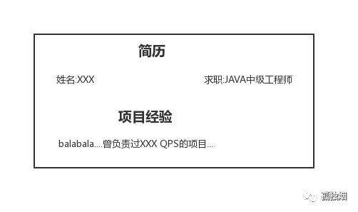
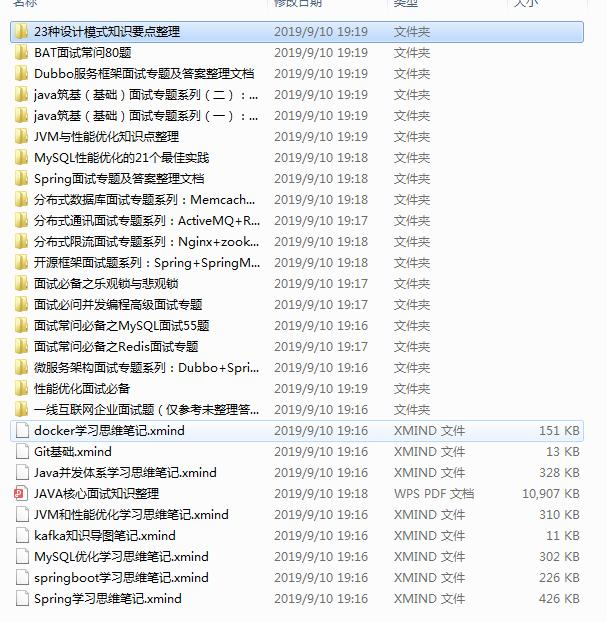

原作：孤独烟。因修改不当之处欢迎指出！
大家好，我是小架架。
今天一大早就起来水文章了。这篇文章我个人感觉虽然含金量不是特别大，估计大家大概5分钟左右就能看完！到底是因为什么呢，因为平时干货文章分享得有点多，今天的话就一顿截图写几个命令就搞定了，所以含金量不高。
然后，我们来看一下近期有一段聊天记录
如下
看到这里，不要吃惊，不要惊讶！看下文哦！
所以，该吹的牛皮都吹出去了。所以写个文章，自己给自己圆上！
QPS是什么
我们先回忆一下，QPS的概念如下所示:
QPS（Query Per Second）：每秒请求数，就是说服务器在一秒的时间内处理了多少个请求。
那我们怎么估出每秒钟能处理多少请求呢？
OK，用日志来估计！那日志怎么记录呢，细分下来，有两种方式。
方式一:自己在接口里记录
这种方式指的是在你的接口里，日志记录了能体现该接口特性的，并具有唯一性的字符串！
例如，下面这一段代码
@RestController
@RequestMapping("/home")
public class IndexController {
//省略
@RequestMapping("/index")
String index() {
logger.info("渣渣烟");
return "index";
}
}
假设现在我要统计index这个接口的QPS！
OK，什么叫能体现该接口特性的字符串呢！就像上面的"渣渣烟"这个字符串，只在index这个接口里出现过，没在其他其他接口里出现过！因此，只要统计出"渣渣烟"这个字符串在日志里的出现次数，就能知道该接口的请求次数！
什么叫具有唯一性的字符串呢！所谓唯一性，指的是"渣渣烟"这个字符串，在这个接口的一次调用流程中，只出现一次！如果出现两次，就会导致到时候统计出来的次数会多一倍，所以尽量选择具有唯一性的字段！
方式二:利用tomcat的access log
如果你的日志里没有我上面提到的字段。OK，那就用tomcat自带的access log功能吧！
因为我平时内置的tomcat比较多，指定下面两个属性即可
server.tomcat.accesslog.directory
设定log的目录，默认: logs
server.tomcat.accesslog.enabled
是否开启access log，默认: false此时，你访问一次/home/index地址，会有下面这样日志
127.0.0.1 - - [19/Aug/2019:23:55:27 +0800] "POST /home/index HTTP/1.1" 200 138那么，你就可以根据日志中，该记录的出现次数，统计index接口的QPS。
实战
假设，你这会日志已经拿到手了，名字为xxx.log。
假设日志内容如下
//省略，都长差不多，贴其中一条就行
0:0:0:0:0:0:0:1 - - [27/Dec/2018:20:41:57 +0800] "GET /mvc2/upload.do HTTP/1.1" 404 949 http-bio-8080-exec-5 43
//省略这个时候，你执行一串命令长下面这样的，进行统计就行！
cat xx.log |grep 'GET /mvc2'|cut -d ' ' -f4|uniq -c|sort -n -r
出来等结果就是
2 [27/Dec/2018:20:40:44
1 [27/Dec/2018:20:47:58
1 [27/Dec/2018:20:47:42
1 [27/Dec/2018:20:41:57然后你就知道，原来在20:40:44 分。。这个接口的QPS最高，达到了惊人的2QPS！
现在，来讲一下命令什么意思！
cat xxx.log : 读文件内容
grep 'GET /mvc2' : 将文件内容按照GET /mvc2 进行过滤
cut -d ' ' -f4 : 过滤出来的内容按照空格进行分割，取第四列内容
uniq -c : 每列旁边显示该行重复出现的次数
sort -n -r : 依照数值的大小排序
那么，如果是其他日志格式，无外乎 ”cut语句“的处理不同而已，道理类似！此法可以估算出单机的某接口的 “QPS” 是多少！
估算
我们现在估计出了单机的QPS。接下来，估算集群的QPS。
这就要根据负载均衡的策略来估计！
比如，你部署了32台机器，负载均衡的策略恰巧为轮询，那集群的QPS就是单机的QPS乘32就好了。
所以，根据具体的策略，来估计整个集群的QPS多大！
然后接下来就是:

多嘴一句，一般2000QPS够了！
总结
作者写到此处，竟无语凝噎。深感其中之内容，话不能语。希望大家有所收获！
最后，文章看到这里的各位，需要JAVA岗面试题和架构资料，请关注我哦！
也希望大家，能够通过我的文章去理解一些东西！能够学而有所成，早日升职加薪！

加我的Java交流群：
772300343
获取哦！